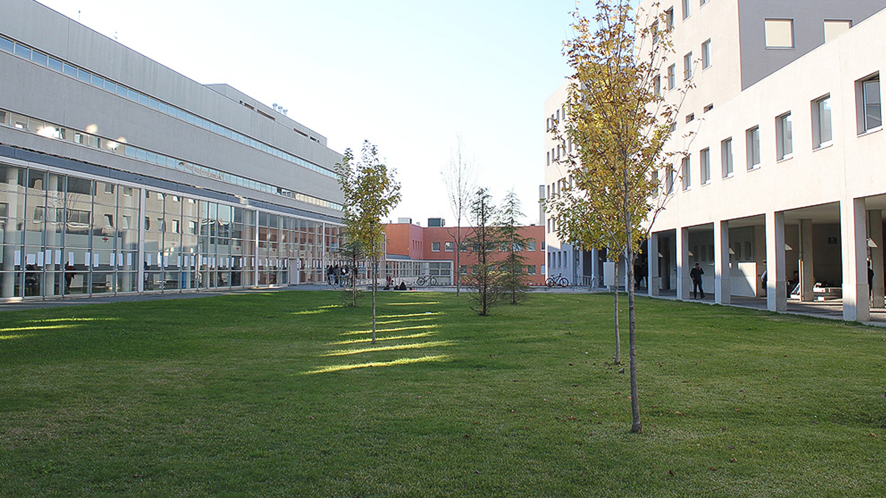

Campus Sustentáveis

Pequenas ações podem ter grandes efeitos no ambiente, então aqui vão algumas dicas que podem contribuir para um campus mais sustentável.
- Substituir copos de plástico por papel: É algo que pode contribuir bastante para o ambiente trocando os copos de plástico nas máquinas de cafés por copos de papel.
- Incentivo à reciclagem: Reciclar papel, vidro, plástico e óleo deve ser uma preocupação quotidiana das universidades na defesa do ambiente, devendo ser integradas no funcionamento das várias unidades ou serviços.
- Diminuir os consumos de água e eletricidade: Com a instalação de redutores de caudal e temporizadores nas torneiras é possível poupar mais água e em relação á eletricidade a instalação de lâmpadas led mais eficientes são uma boa solução.
- Promoção de espaços verdes: A promoção de espaços de lazer onde o verde e a natureza predominam é também uma forma de preservar a qualidade de vida dos estudantes e professores.
O desenvolvimento sustentável é fundamental para responder às necessidades da sociedade sem comprometer as gerações futuras. Não só nas instituições de ensino superior, mas a sociedade como um todo, a defesa do meio ambiente visa melhorar as condições de vida no curto, médio e longo prazo.